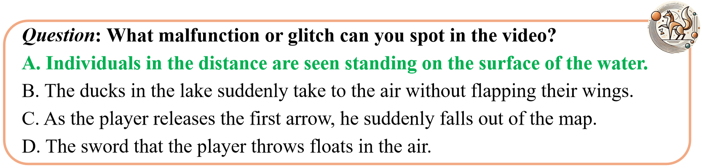

This leaderboard is sorted by AVG. To view other sorted results, please click on the corresponding cell.
This leaderboard is sorted by AVG. To view other sorted results, please click on the corresponding cell.
| # | Model | LLM Params |
Date | AVG (%) | Mechanics (%) | Kinematics (%) | Optics (%) | Material (%) | ||||||||
|---|---|---|---|---|---|---|---|---|---|---|---|---|---|---|---|---|
| Grav. | Elast. | Fric. | Velo. | Acc. | Refl. | Refr. | Abs. | Col. | Rig. | Sha. | Gest. | |||||
|
PhysVLM-DPO
Ours |
7B | 2024-11-15 | 59.5 | 64.8 | 66.3 | 60.2 | 59.6 | 60.2 | 39.1 | 67.9 | 35.6 | 57.8 | 62.2 | 37.5 | 78.2 | |
|
PhysVLM-SFT
Ours |
7B | 2024-11-15 | 56.7 | 54.9 | 62.5 | 60.2 | 51.1 | 63.6 | 45.7 | 57.1 | 28.8 | 64.4 | 51.4 | 50.0 | 72.4 | |
| GPT-4o-0806
OpenAI |
- | 2024-08-06 | 56.1 | 47.9 | 61.3 | 59.1 | 43.6 | 61.4 | 43.5 | 53.6 | 50.8 | 68.9 | 54.1 | 65.6 | 63.2 | |
| Gemini-1.5-pro
|
- | 2024-06-15 | 55.2 | 50.7 | 70.0 | 48.9 | 51.1 | 59.1 | 50.0 | 42.9 | 52.5 | 71.1 | 56.8 | 53.1 | 58.6 | |
|
Claude3.5-Sonnet
Anthropic |
- | 2024-07-30 | 54.3 | 50.7 | 58.8 | 50.6 | 53.2 | 59.1 | 50.0 | 50.0 | 49.2 | 64.4 | 52.7 | 50.0 | 62.1 | |
|
Qwen-VL-max
Alibaba |
- | 2024-06-15 | 50.9 | 50.7 | 53.8 | 51.1 | 31.9 | 46.6 | 50.0 | 60.7 | 50.8 | 64.4 | 48.6 | 65.6 | 59.8 | |
|
Gemini-1.5-pro-flash
|
- | 2024-06-15 | 48.5 | 47.9 | 52.5 | 51.7 | 43.6 | 51.1 | 43.5 | 53.6 | 33.9 | 64.4 | 43.2 | 46.9 | 49.4 | |
|
LLaVA-OneVision
|
7B | 2024-08-08 | 47.7 | 50.7 | 50.0 | 46.0 | 39.4 | 45.5 | 43.5 | 71.4 | 40.7 | 55.6 | 44.6 | 56.2 | 52.9 | |
|
Claude3.5-SonnetV2
Anthropic |
- | 2024-07-30 | 47.6 | 46.5 | 52.5 | 46.6 | 37.2 | 53.4 | 47.8 | 50.0 | 33.9 | 55.6 | 54.1 | 43.8 | 51.7 | |
|
GPT-4V
OpenAI |
- | 2024-06-15 | 45.9 | 40.8 | 60.0 | 48.3 | 34.0 | 48.9 | 43.5 | 46.4 | 42.4 | 53.3 | 45.9 | 37.5 | 44.8 | |
| GPT-4o-mini-0718
OpenAI |
- | 2024-07-18 | 40.3 | 43.7 | 43.8 | 39.2 | 35.1 | 44.3 | 30.4 | 46.4 | 42.4 | 44.4 | 37.8 | 37.5 | 41.4 | |
| PPLLaVA
Peking University |
7B | 2024-11-04 | 38.4 | 45.1 | 38.8 | 42.6 | 30.9 | 30.7 | 41.3 | 39.3 | 35.6 | 44.4 | 39.2 | 18.8 | 43.7 | |
| VideoChat2
Shanghai AI Lab |
7B | 2024-06-15 | 34.3 | 33.8 | 35.0 | 29.5 | 41.5 | 28.4 | 28.3 | 32.1 | 33.9 | 33.3 | 41.9 | 21.9 | 44.8 | |
| InternVL2
Shanghai AI Lab |
7B | 2024-07-18 | 33.4 | 29.6 | 31.2 | 38.6 | 35.1 | 30.7 | 30.4 | 53.6 | 35.6 | 26.7 | 29.7 | 18.8 | 34.5 | |
| ST-LLM
Peking University |
7B | 2024-06-15 | 32.8 | 32.4 | 26.2 | 26.7 | 37.2 | 28.4 | 37.0 | 25.0 | 28.8 | 33.3 | 40.5 | 37.5 | 46.0 | |
| LLaVA-Next-Video
Bytedance & NTU S-Lab |
7B | 2024-05-10 | 32.2 | 43.7 | 33.8 | 27.3 | 34.0 | 22.7 | 21.7 | 35.7 | 23.7 | 35.6 | 41.9 | 34.4 | 37.9 | |
| Chat-UniVi
Peking University |
7B | 2024-06-15 | 29.5 | 28.2 | 27.5 | 29.5 | 39.4 | 23.9 | 28.3 | 32.1 | 30.5 | 31.1 | 18.9 | 28.1 | 35.6 | |
| Video-LLaVA
Peking University |
7B | 2024-06-15 | 29.0 | 32.4 | 22.5 | 27.8 | 31.9 | 26.1 | 19.6 | 35.7 | 32.2 | 31.1 | 36.5 | 28.1 | 27.6 | |
 Mechanics
Mechanics
Kinematics

 Optics
Optics
Material
Comparison with existing benchmarks for video LLMs in terms of the video number (#Videos), the average video duration (Len.), the number of QA pair (#QA Pairs), the average QA pair tokens (QA Tokens), the manually/automatic annotation manner (M/A), whether the benchmarks are gameplay video based (Game-Bsd), whether the questions are physical commonsense classified (Phys-Clsf), and whether the benchmarks contain meta information (Meta-info).

Comparison with existing gameplay video benchmarks in terms of whether they are video-based (Vid-Bsd), whether they follow an instructional format (Instruct), and support multi-modal evaluations (MModal).
@article{cao2024physgame,
title={PhysGame: Uncovering Physical Commonsense Violations in Gameplay Videos},
author={Cao, Meng and Tang, Haoran and Zhao, Haoze and Guo, Hangyu and Liu, Jiaheng and Zhang, Ge and Liu, Ruyang and Sun, Qiang and Reid, Ian and Liang, Xiaodan},
journal={arXiv preprint arXiv:2412.01800},
year={2024},
},
@article{liu2024ppllava,
title={PPLLaVA: Varied Video Sequence Understanding With Prompt Guidance},
author={Liu, Ruyang and Tang, Haoran and Liu, Haibo and Ge, Yixiao and Shan, Ying and Li, Chen and Yang, Jiankun},
journal={arXiv preprint arXiv:2411.02327},
year={2024}
}